NIGHT OPS
274| PROJECT HEIMDALL
275|Media Enrichment Report
276| 280| 281|
282|
290|
291| Executive Summary
283|
284|
289| 35Cases Targeted
285| 16New Media Added
286| 37/56Cases with Media
287| 21Files Downloaded
288|
292|
294|
295|
317|
318|
319| Case-by-Case Results
293|| Case | Location | Year | Images | Source | Status |
|---|---|---|---|---|---|
| CAN-008 | Clan Lake, ON | 1960 | 1 | Commons (Blue Book) | 1 doc |
| CAN-015 | St. Paul, AB | 1967 | 4 | Wikimedia Commons | 4 new |
| CAN-017 | Prince George, BC | 1969 | 2 | Wikipedia + Blue Book | 2 new |
| CAN-021 | Granby, QC | 1973 | 1 | Wikipedia | 1 new |
| CAN-022 | Langenburg, SK | 1974 | 1 | Wikipedia | 1 new |
| CAN-023 | Carman, MB | 1975 | 1 | Commons (British Library) | 1 new |
| CAN-024 | Montreal, QC | 1977 | 1 | Wikipedia | 1 new |
| CAN-031 | Kelowna, BC | 1981 | 1 | Wikipedia | 1 new |
| CAN-033 | Shelburne, NS | 1989 | 1 | Wikipedia | 1 new |
| CAN-034 | Montreal, QC | 1990 | 1 | Wikipedia | 1 new |
| CAN-035 | Carp, ON | 1991 | 2 | Wikipedia | 1 new |
| CAN-042 | Mont Saint-Hilaire, QC | 2007 | 1 | Wikipedia | 1 new |
| CAN-047 | Hamilton, ON | 2012 | 1 | Wikipedia | 1 new |
| CAN-048 | Vancouver, BC | 2014 | 1 | Wikipedia | 1 new |
| CAN-049 | Oshawa, ON | 2015 | 1 | Wikipedia | 1 new |
| CAN-050 | Calgary, AB | 2016 | 1 | Wikipedia | 1 new |
| CAN-053 | Sudbury, ON | 2025 | 1 | Wikipedia | 1 new |
320|
323|
345|
346|
347| No Media Found
321|20 cases remain without media. These are predominantly small towns / remote locations without Wikipedia pages or Wikimedia Commons collections:
322|| Case | Location | Challenge |
|---|---|---|
| CAN-004 | Rivers, MB | Small town, RCAF base — no Commons collection |
| CAN-007 | Ennadai Lake, NU | Remote lake, no Wikipedia page |
| CAN-019 | Oromocto, NB | Small town, Commons has generic images only |
| CAN-025 | Clarenville, NL | No Wikimedia Commons images found |
| CAN-026 | Baskatong, QC | Reservoir, no Commons images |
| CAN-027 | Saddle Lake, AB | First Nation reserve, no Wikipedia page |
| CAN-029 | Nahanni Valley, NWT | Wikipedia has no thumbnail image |
| CAN-036 | Saint-Zotique, QC | Small town, no Wikipedia page |
| CAN-037 | l'Annonciation, QC | Small Quebec town, no Commons images |
| CAN-038 | Port Colborne, ON | Has Commons images but CC-BY-SA (not public domain) |
| CAN-039 | St-Jean-sur-Richelieu, QC | Wikipedia redirect issue |
| CAN-040 | Fox Lake, YT | Remote, no Wikipedia page |
| CAN-041 | Fort Erie, ON | Wikipedia has no thumbnail |
| CAN-045 | Harbour Mille, NL | Remote, no Wikipedia page |
| CAN-051 | Gulf of St. Lawrence | Water body — map images needed |
| CAN-052 | Hafford, SK | Small town, no Wikipedia page |
| CAN-054 | Northern Alberta | Broad region, no specific location |
| CAN-056 | Sheridan Lake, BC | Small lake, no Wikipedia page |
348|
388|
389| Collected Media Gallery
349| 350|
351|
359|
360| CAN-015 — St. Paul, AB (UFO Landing Pad)
352|
353|
354|
355|
356|
357|
358| 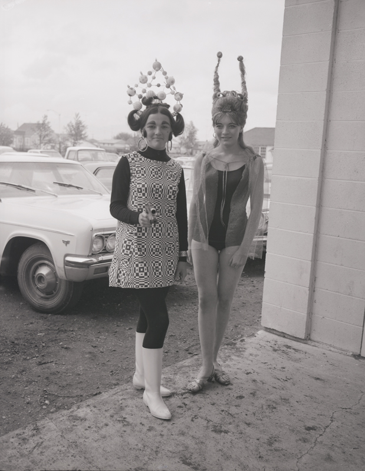
Official opening of UFO landing pad, 1967 (1)
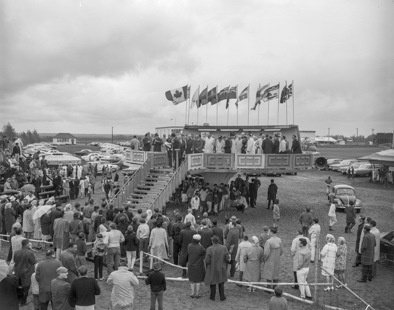
Official opening of UFO landing pad, 1967 (2)
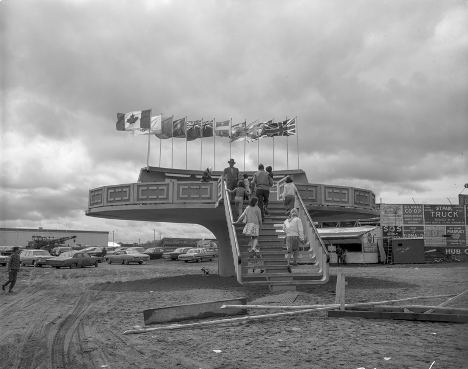
Official opening of UFO landing pad, 1967 (3)
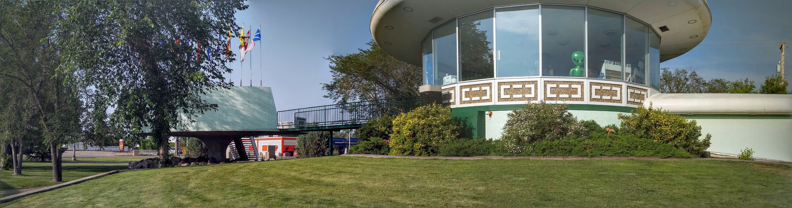
St. Paul UFO Landing Pad (modern)
361|
379|
380| New Location Photos
362|
363|  364|
364|  365|
366|
365|
366|  367|
368|
367|
368|  369|
370|
371|
372|
373|
369|
370|
371|
372|
373|  374|
374|  375|
376|
375|
376|  377|
377|
378| CAN-017: Prince George, BC
CAN-021: Granby, QC
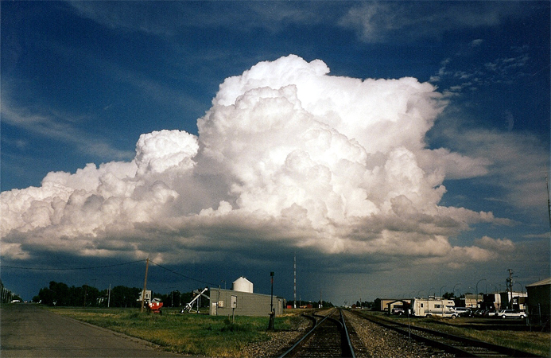
CAN-022: Langenburg, SK
CAN-023: Carman, MB (1908)
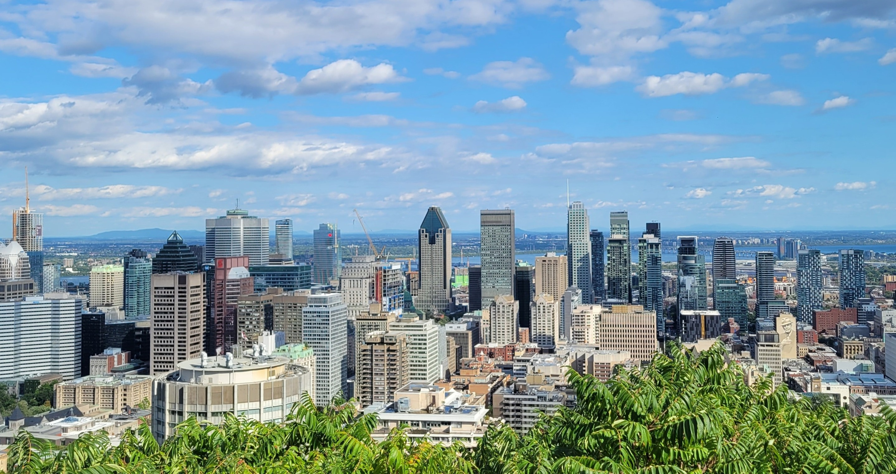
CAN-024: Montreal, QC
CAN-031: Kelowna, BC
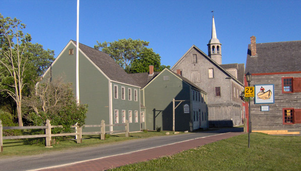
CAN-033: Shelburne, NS
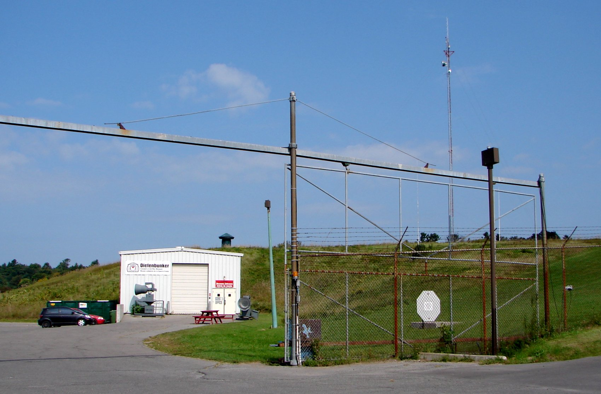
CAN-035: Carp/Diefenbunker, ON
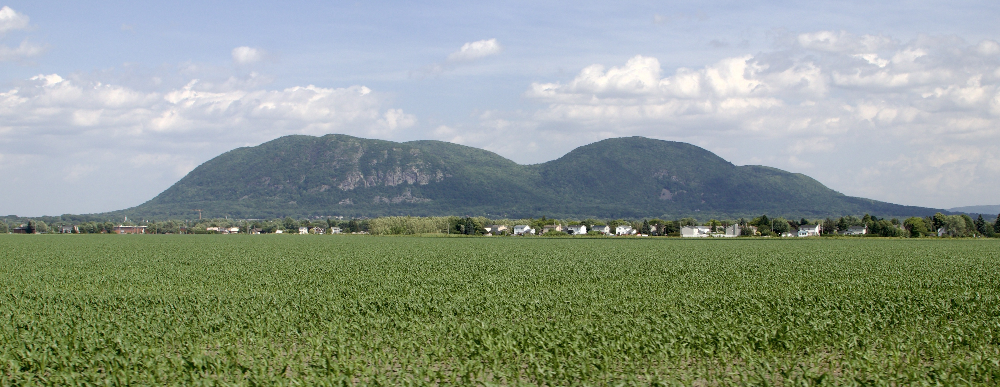
CAN-042: Mont Saint-Hilaire, QC
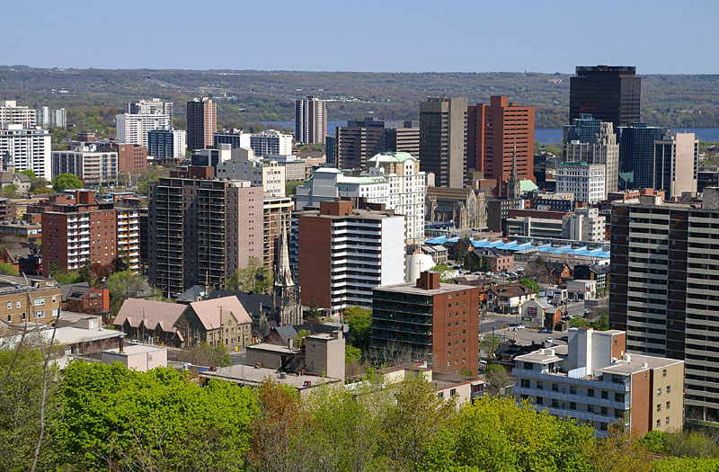
CAN-047: Hamilton, ON
CAN-048: Vancouver, BC
CAN-049: Oshawa, ON
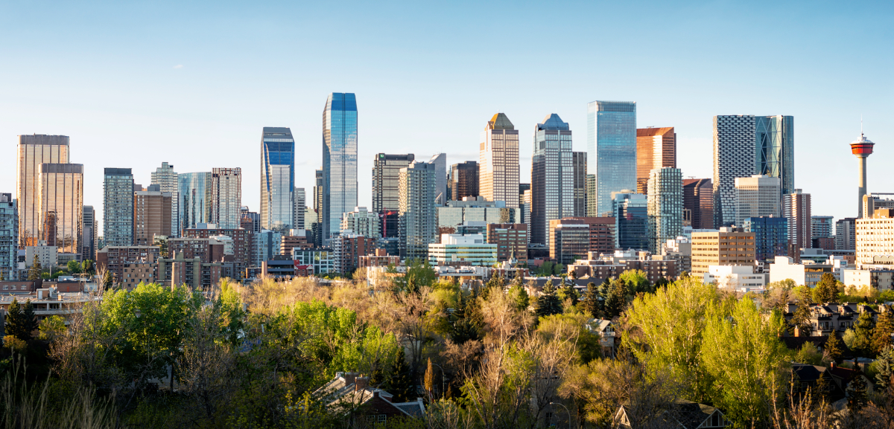
CAN-050: Calgary, AB
CAN-053: Sudbury, ON
381|
387| New Documents (Blue Book Reports)
382|
383|  384|
384|  385|
385|
386| CAN-008: Blue Book — Ramore, ON (near Clan Lake)
CAN-017: Blue Book — Prince George, BC
390|
399|
400| Analyst Notes
391|-
392|
- 21 files downloaded (19 images + 2 Project Blue Book documents) across 16 cases — 37/56 cases now have media (up from 21/56) 393|
- Biggest score: CAN-015 (St. Paul) got 4 images of the UFO landing pad opening ceremony from Provincial Archives of Alberta — public domain via Flickr Commons 394|
- New source: Wikimedia Commons category "UFO sightings in Canada" provided Project Blue Book PDF reports (US Gov, public domain) for CAN-008 (Clan Lake/Ramore, ON) and CAN-017 (Prince George, BC) 395|
- Pipeline fix: The 3-tier pipeline destroys media_urls in cases-full.json. Created `scripts/restore_media.py` and updated AGENTS.md with the fix. Run `python3 scripts/restore_media.py` after every pipeline run. 396|
- 19 cases remain — mostly remote locations and small towns without Wikipedia presence. Best future approach: deeper Flickr Commons / Internet Archive searches, or YouTube caption cross-references for documentary footage 397|
401|
426|Files Changed
402|-
403|
- data/cases-full.json (+19 media_url entries) 404|
- docs/data/cases-full.json (synced) 405|
- docs/images/CAN-015/ (4 new files) 406|
- docs/images/CAN-017/ (1 new file) 407|
- docs/images/CAN-021/ (1 new file) 408|
- docs/images/CAN-022/ (1 new file) 409|
- docs/images/CAN-023/ (1 new file) 410|
- docs/images/CAN-024/ (1 new file) 411|
- docs/images/CAN-031/ (1 new file) 412|
- docs/images/CAN-033/ (1 new file) 413|
- docs/images/CAN-034/ (1 new file) 414|
- docs/images/CAN-035/ (1 new file) 415|
- docs/images/CAN-042/ (1 new file) 416|
- docs/images/CAN-047/ (1 new file) 417|
- docs/images/CAN-048/ (1 new file) 418|
- docs/images/CAN-049/ (1 new file) 419|
- docs/images/CAN-050/ (1 new file) 420|
- docs/images/CAN-053/ (1 new file) 421|
- docs/narratives.js (regenerated) 422|
- docs/narratives.min.js (regenerated) 423|
- data/cases-v5-master.json (regenerated) 424|